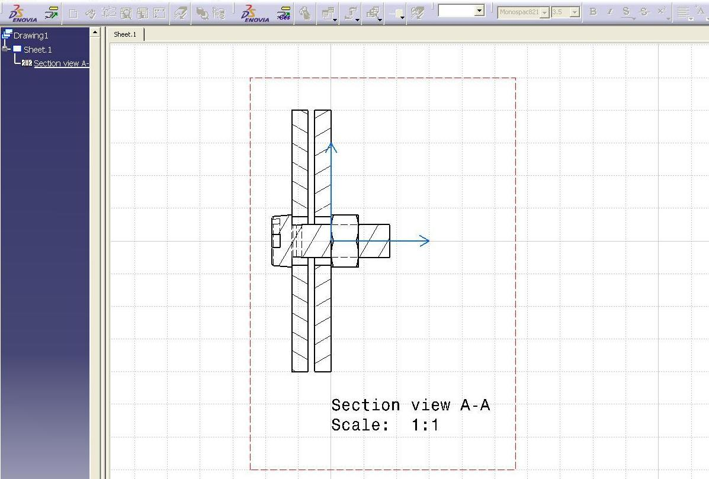

Mechanical Design |
Assembly Design |
Drafting Properties of Product's ComponentRetrieves/sets the drafting properties |
| Use Case | ||
AbstractThis article discusses the CAAAuiProdDraftingProperties use case. This use case explains how to retrieve and to set the drafting properties for a product's component. |
This use case is intended to help you make your first steps in programming with CATIA Product Design. Its main intent is to retrieve and set drafting properties of an Product design document. More specifically, you will learn how to:
[Top]
CAAAuiProdDraftingProperties is a use case of the CAAAssemblyUI.edu framework that illustrates the CATAssemblyInterfaces framework capabilities.
Before discussing the use case, some main concepts, about the drafting properties, have to be introduced:
Hidden Line Property :- Determine the hide status of the line.
Cut status of the component :- Determine if the component will be cut when projected in section view.
Projected status of the component:- Determine if the component will be projected in the section view.
ut [Top]

CAAAuiProdDraftingProperties:
[Top]
To launch CAAAuiProdDraftingProperties, you will need to set up the build time environment, then compile CAAAuiProdDraftingProperties along with its prerequisites, set up the run time environment, and then execute the use case [1].
Launch the use case as follows:
e:>CAAAuiProdDraftingProperties InputDocument OutputDocument |
$ CAAAuiProdDraftingProperties InputDocument OutputDocument |
where:
InputDocument |
Complete path for "ScrewedPlates.CATProduct", usually it is in the resources directory of your RuntimeView |
| OutputDocument | Complete path for "ScrewedPlates_Output.CATProduct", where modified document will be stored |
[Top]
The CAAAuiProdDraftingProperties use case is located in the CAAAuiProdDraftingProperties.m module of the CAAAssemblyUI.edu framework:
| Windows | InstallRootDirectory\CAAAssemblyUI.edu\CAAAuiProdDraftingProperties.m\ |
| Unix | InstallRootDirectory/CAAAssemblyUI.edu/CAAAuiProdDraftingProperties.m/ |
where InstallRootDirectory is the directory where the CAA CD-ROM
is installed.
[Top]
The required data for CAAAuiProdDraftingProperties ODT is located in the CAAAssemblyUI.tst framework:
| Shell script | InstallRootDirectory/CAAAssemblyUI.tst/FunctionTests/TestCases/CAAAuiProdDraftingProperties.sh |
| InputData | InstallRootDirectory/CAAAssemblyUI.tst/FunctionTests/TestCases/InputData/ScrewedPlates.CATProduct |
| Output | InstallRootDirectory/CAAAssemblyUI.tst/FunctionTests/TestCases/Output/intel_a/ScrewedPlates_output.CATProduct |
where InstallRootDirectory is the directory where the CAA CD-ROM
is installed.
[Top]
There are five main steps in CAAAuiProdDraftingProperties:
We will now comment at each of those sections by looking at the code.
[Top]
CAAAuiProdDraftingProperties begins by checking that the command lines contains two argument (Complete path for input CATProduct document and output CATProduct document). It then creates a session, and opens a CATProduct document with the help static method OpenDocument of class CATProductDocument. It then retrieves the root document by using CATIDocRoots, and then retrieves Screw.1, Nut.1 and Washer.1 instances (of type CATIProduct). It then modifyes Screw.1 Hidden Line properties, followed by modifying Nut.1 Cut properties then by modifying Washer.1 Projected properties by using CATIProdDraftingProperties method
[Top]
... // modifying Screw.1 properties, |
The GetHiddenLine returns
| TRUE | If the Line is Hidden. |
| FALSE | If the Line is Visible. |
[Top]
...
// modifying Nut.1 properties,
CATIProdDraftingProperties * piProd_DftProp = NULL;
if ( SUCCEEDED( piProd_Nut->QueryInterface( IID_CATIProdDraftingProperties, (void **) & piProd_DftProp ) ) )
{
CATBoolean cut = FALSE; piProd_DftProp->GetCutStatus( cut );
if ( TRUE == cut )
{
piProd_DftProp->SetCutStatus( FALSE ); }
}
// Process next
...
|
The GetCutStatus returns:
| TRUE | The component will be cut when projected in the section view. |
| FASLE | The component will not be cut when projected in the section view. |
[Top]
...
// modifying Washer.1 properties,
CATIProdDraftingProperties * piProd_DftProp = NULL;
if ( SUCCEEDED( piProd_Washer->QueryInterface( IID_CATIProdDraftingProperties, (void **) & piProd_DftProp ) ) )
{
CATBoolean use = FALSE;
piProd_DftProp->GetUseStatus( use );
if ( TRUE == use )
{
piProd_DftProp->SetUseStatus( FALSE );
}
}
// Process next
...
|
The GetUseStatus returns ..
| TRUE | The component is Projected when in section view. |
| FALSE | The component is not Projected when in section view. |
[Top]
Close the document and then session is closed, as usual.
[Top]
This use case has demonstrated the way to retrieve and set the HideLine, Cut and Projection drafting properties of a Product design document.
[Top]
| [1] | Building and Launching a CAA V5 Use Case |
| [Top] | |
| Version: 1 [Mar 2005] | Document created |
| [Top] | |
Copyright © 2005, Dassault Systèmes. All rights reserved.